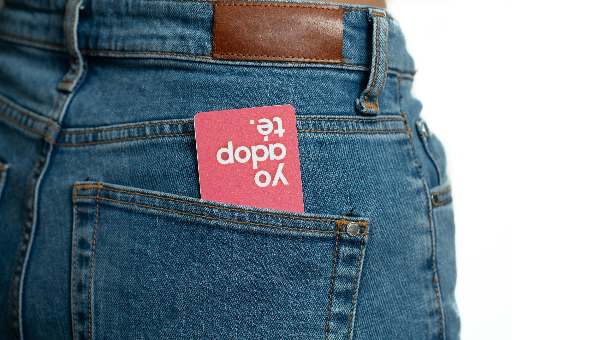
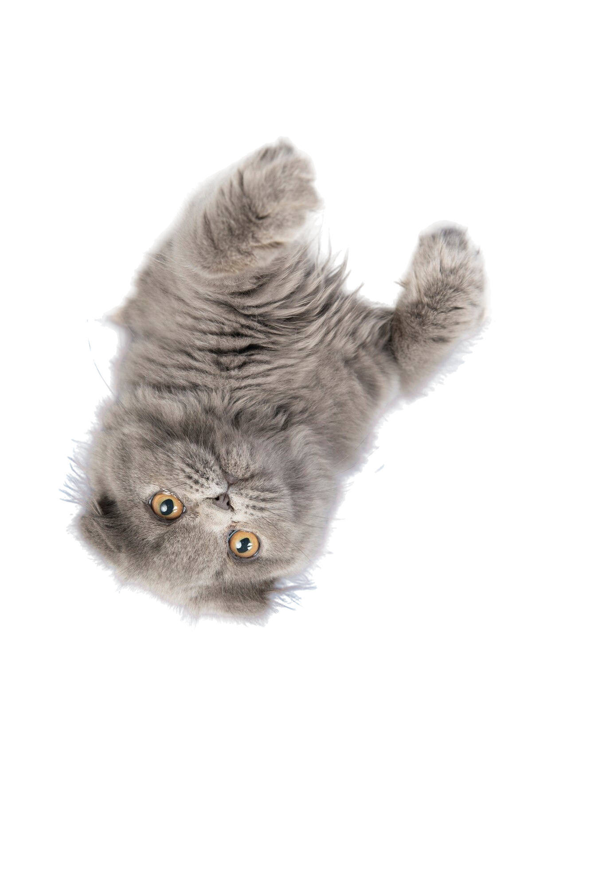

adopta.club
Ecuador tiene más de un millón de mascotas viviendo en las calles, y durante la pandemia el abandono animal se disparó. Adopta.club nació como respuesta a esa realidad: un directorio digital donde refugios y adoptantes se encuentran, y donde cada adopción es el comienzo de una historia nueva.
Proyecto
Propio
Servicio
UX / Desarrollo Web
Industria
Impacto Social
Impacto
200+ adopciones
Directorio en vivo
Ver todos


Reto
La pandemia disparó el abandono animal en Ecuador. El problema ya existía — solo que nadie había diseñado una solución.
Cuando el confinamiento obligó a los refugios a cerrar sus puertas físicas, el abandono de mascotas se agudizó y la gestión de adopciones quedó aún más fragmentada: publicaciones en redes sociales sin estructura, grupos de mensajería difíciles de filtrar, y refugios sin ninguna visibilidad digital. No existía una plataforma centralizada, amigable y de acceso libre donde los refugios pudieran publicar sus animales y los adoptantes pudieran buscar por especie, ciudad o características específicas. Esa ausencia era, sobre todo, un problema de diseño.
Directorio
de adopción
Plataforma central donde refugios publican sus animales y adoptantes buscan por especie, ciudad o características específicas.
Beneficios
Programa con empresas aliadas: descuentos exclusivos en veterinarias, accesorios y servicios de cuidado animal para quienes adoptan a través de la plataforma.

Donaciones
Sistema integrado con PayPal para que adoptantes apoyen directamente a los refugios aliados de Ecuador.
Perfil de
mascota
Cada animal tiene su propio perfil con fotos, descripción, especie, edad y ciudad. La solicitud de adopción se hace desde el mismo sitio: un formulario rápido cuya respuesta llega al refugio por correo.

0+
adopciones
En su primer año de funcionamiento: más de 200 adopciones, 20+ refugios apoyados y 10.000 seguidores en Instagram.


Solución
Diseñé y desarrollé adopta.club de cero en plena pandemia: un directorio de animales en adopción con perfiles individuales por mascota, sistema de registro para refugios y adoptantes, y publicación guiada de animales disponibles. La experiencia de usuario fue diseñada para que cualquier persona — sin conocimientos técnicos — pudiera publicar un animal en menos de tres minutos.
Cada perfil incluye descripción, fotos, especie, edad y ciudad. Desde el mismo perfil, el interesado completa un formulario rápido de solicitud de adopción: al enviarlo, el refugio recibe un correo con el perfil completo del posible adoptante y un botón para ponerse en contacto. Para los refugios aliados, se integró un sistema de donaciones vía PayPal y un programa de beneficios con empresas aliadas: descuentos en veterinarias, accesorios y servicios de cuidado animal. En su primer año de funcionamiento, adopta.club facilitó más de 200 adopciones, apoyó con donaciones a más de 20 refugios en Ecuador y creció a más de 10.000 seguidores en Instagram.
Lo que dicen
Testimonios de adoptantes y refugios que confiaron en adopta.club para encontrar o dar un hogar.